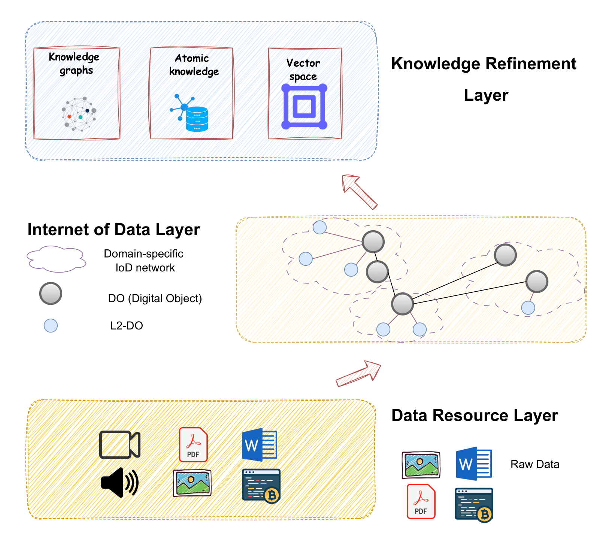
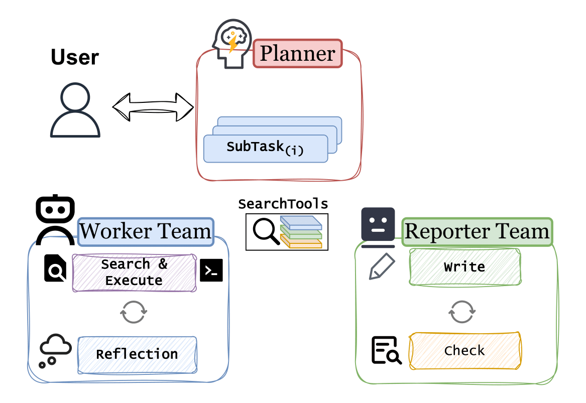

方法论
FAIR 合规的数据表示
IoDResearch 将异构资源封装为符合 FAIR 原则的数字对象， 确保科学数据的可发现性（Findability）、可访问性（Accessibility）、 互操作性（Interoperability）和可重用性（Reusability）。
这些数字对象进一步细化为：
- 原子知识单元：细粒度的知识表示，用于精确检索
- 知识图谱：实体间关系的结构化表示
- 异构图索引：多粒度检索基础设施

多智能体系统
在异构图表示的基础上，IoDResearch 采用多智能体系统，支持：
- 可靠的问答：在私有异构数据上进行准确的问答
- 结构化科学报告生成：自动生成结构良好的研究报告
多智能体系统通过协作和分工，能够处理复杂的深度研究任务， 确保生成的内容既准确又结构化。

数据互联网范式
IoDResearch 实现了数据互联网范式，使得：
- 以私有数据为中心的深度研究：专注于本地私有数据而非网络搜索
- 异构数据集成：统一表示多源、多模态的科学数据
- 可信且可重用的科学发现：遵循 FAIR 原则以更好地管理数据